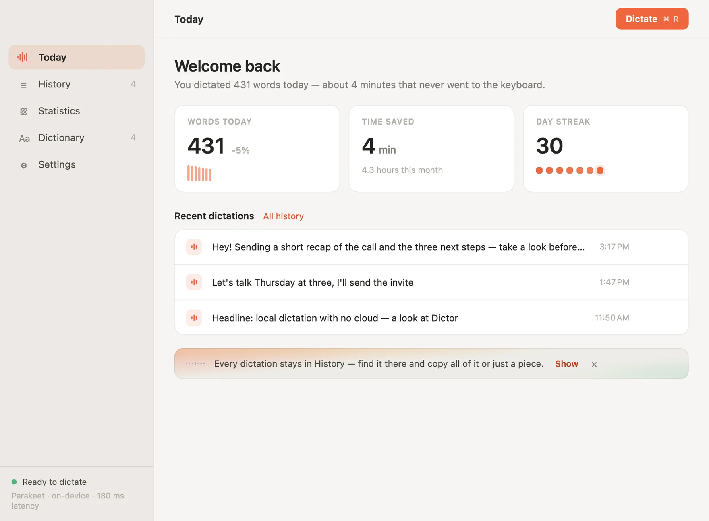
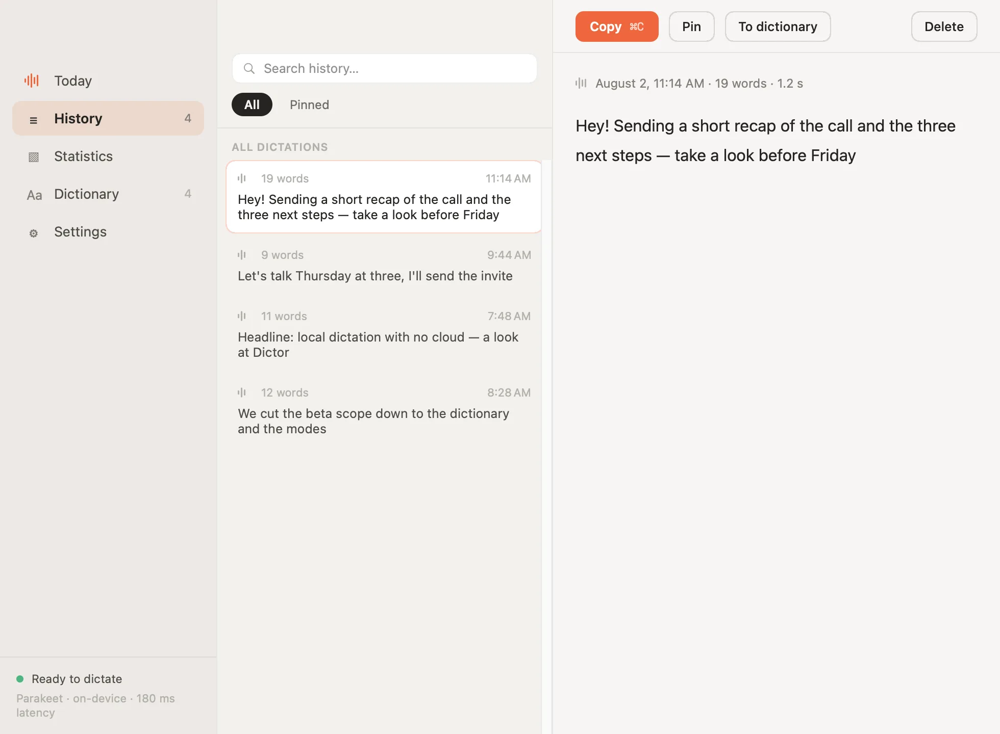
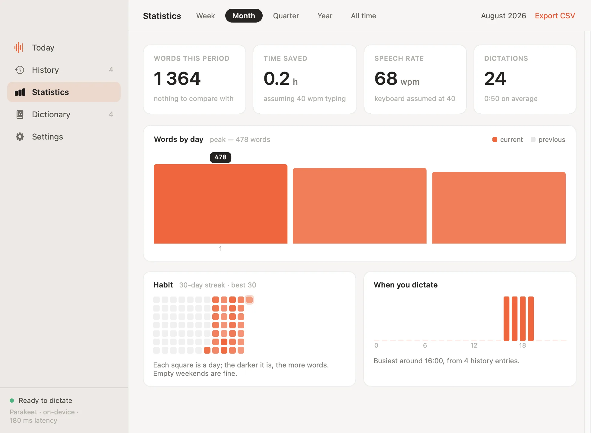
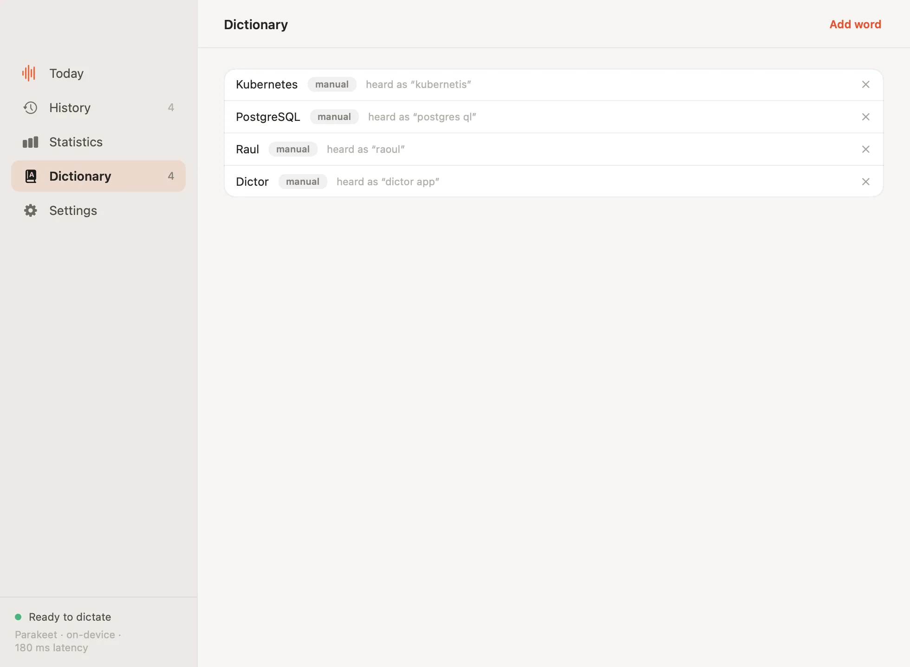
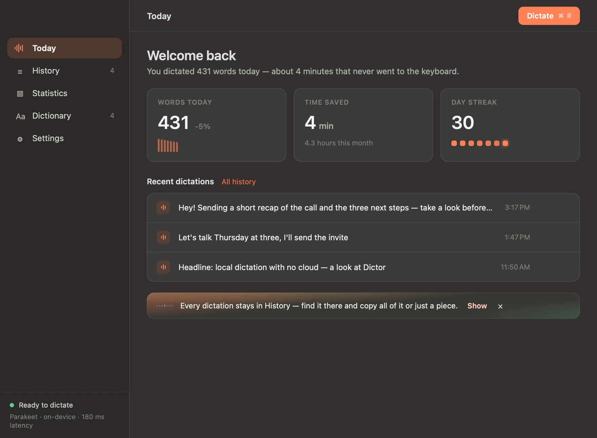
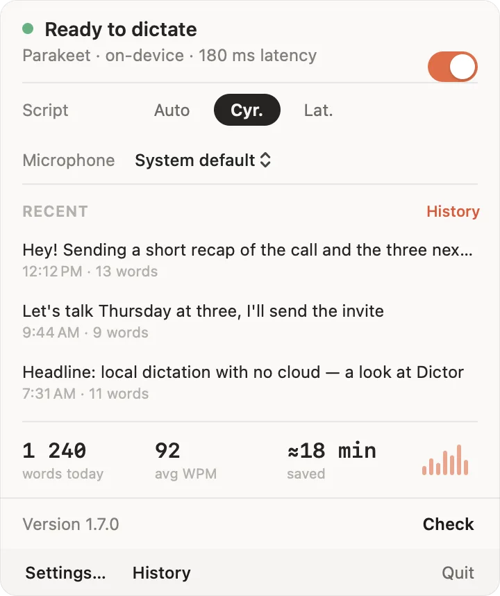
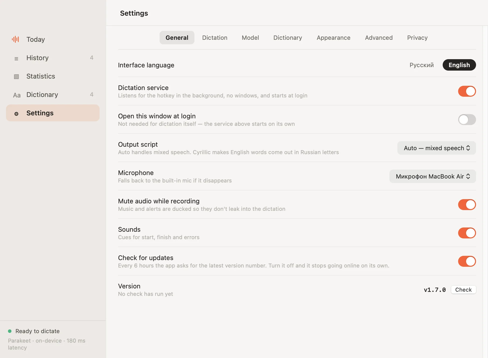

Put the cursor in any field, hold right ⌘ and speak. Let go, and the text is there — where the cursor was. Your Mac does the transcribing itself, on the Neural Engine: no account, no subscription, no cloud.
Nothing to open: the app lives in the menu bar and waits for the key.
An email, a chat, a search box, a code editor — anywhere you would normally type.
A capsule with a waveform appears — that is how you know you are heard. A toggle mode works too: press once to start, once to stop.
The text lands under the cursor. Half a minute of speech takes about half a second to process.
The window opens from the menu bar — though on an ordinary day you never need it.







Dictation apps ask you to trust a company with your voice. This one does not ask.
Audio is transcribed on your Mac and deleted as soon as the text is ready. It is never uploaded to a server — ours or anyone else's.
The internet is needed twice: once to download the model, and every six hours to ask for the latest version number. Turn that check off and the app stops using the network at all.
The source is open under the MIT licence: what the program does with your voice is visible line by line, not just claimed.
| Dictor | Cloud dictation | Built into macOS | |
|---|---|---|---|
| Audio leaves the Mac | never | every recording | for some languages |
| Works offline | yes | no | limited |
| Price | free | monthly | free |
| Searchable history | 10,000 dictations | varies | none |
| Custom dictionary | yes | usually | no |
| Languages | English, Russian and ~17 more | yes | yes |